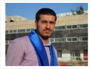

Curriculum vitae |
Zied Boussetta |
||||||||||
INFORMATION PERSONNELLE |
Zied Boussetta |
||||||||||
|
 | ||||||||||
EMPLOI RECHERCHÉ |
Développeur |
||||||||||
EXPÉRIENCE PROFESSIONNELLE |
________________ |
||||||||||
| Mai -Décembre 2017: |
Développeur Android • Spécification et analyse des projets |
|
Octobre-Décembre 2016: |
Freelance:Développement d'une application mobile (Android):Gestion de Textiles |
Mai 2015: |
Stage fin d'études au sein de la société I-Services : Gestion de foyer. |
|
Aout-Septembre2014: |
Stage ingénieur chez la société Group Dallian:Gestion ERP Médicale. |
|
Avril 2014: |
Développement d'une application web dynamique (JAVA/JEE) |
|
Juillet 2013: |
Stage ouvrier chez Tunisie Télécom. |
ÉDUCATION ET FORMATION |
___________ |
|
Juillet –Aout 2018: |
Formation en langue Allemand en Ecole Privée Intégrale |
|
Janvier -Mars 2018: |
Formation en langue Allemand auDeutschsprachigenKulturkeisDjerba(DKD) |
|
Aout 2017: |
Formation en langue Allemand au Centre The Bridge Training Center Djerba |
Juillet 2017: |
Formation en Freelance au Centre Schooling Plus Djerba |
Janvier-Mai 2017: |
Formation en langue Allemand au Centre AcademyAlqualem Djerba |
Aout 2016: |
Formation en Android au Centre AcademyAlqualem Djerba |
Juillet 2016: |
Formation en langue Anglais Général à l'ISET Djerba |
Juin 2015: |
Diplôme d'ingénieurs de l'Ecole Ploytechnique Centrale Privée |
2012: |
Réussite au concours national d'accès au cycle de formation des ingénieurs section Techniques-Physiques |
2008-2011: |
Cycle Préparatoire Scientifique IPEIM. |
Juin 2008: |
Réussite au baccalauréat tunisien section Technique avec mention bien. |
COMPÉTENCES PERSONNELLES |
___________ |
Langue(s) maternelle(s) |
Arabe et Amazigh. |
Autres Langue |
Français:Bien |
Compétences Techniques |
Langage de programmation et framework: |